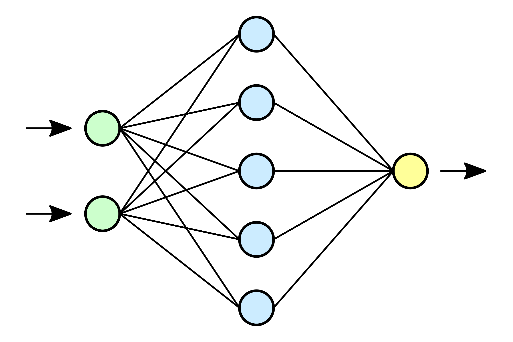

Introduction to AI
Contents
46. Introduction to AI#
46.1. What is AI?#

Artificial Intelligence (AI) is the general name given to intelligence demonstrated by machines (software or hardware). This covers a lot of different areas and has broad-reaching applications. Typically when discussing AI in terms of data science, we’re specifically interested in a subfield focused on learning. This is called Machine Learning (ML).
46.2. Types of Machine Learning#
There are many types of machine learning algorithms and each has a variety of applications. Here we have broken it down into 3 general subcategories: Supervised, Unsupervised, and Reinforcement Learning

46.2.1. Unsupervised Learning#
Unsupervised learning is used to extract patterns from data that might be difficult for a human to detect. Sometimes this is the end of the story (i.e. the pattern is your result) but you can also use unsupervised learning to identify key features in your data that can help you focus your analysis.
Example: Sorting things into categories (songs into genres, ice cream flavors you like/dislike). Unsupervised Learning is mostly used in clustering/sorting thing like songs in to genres, climate regions, customer segmentation or more advance like recommender systems (likes/dislikes) and anomaly detection
46.2.2. Supervised Learning#
Supervised learning relies on data that has been labled such that a teacher can test the program on whether or not the input data is obtaining the desired output. Over many iterations and extensive training, the program can reach a state that it can produce the correct outputs on the training data and can be tested on previously unseen data.
Example: Teaching a child barnyard animals with a picture book
46.2.3. Reinforcement Learning#
Reinforcement learning involves building a set of rules that govern a system and a series of rewards/penalties for following/breaking those rules. In most cases, the program is described as an “agent” who navigates the system dynamically and attempts to obtain the maximum reward or minimum penalty.
Example: Learning to drive a car or play a game
46.2.4. How ML works#
So how does all of this actually work?
CPGrey Video - How Machines Learn

46.3. Deep Learning#
Deep learning (DL) is a sub-field of machine learning where the artificial neural networks are inspired by the human brain. The term ‘deep learning’ is used because the neural networks have various layers that enable learning, unlearning, and relearning. For example the Convolutional Neural Networks can be used for image detection, Recurrent Neural Network can be used for weather prediction. Deep learning is a rapidly growing field and has applications from computer vision to drug design.
More on Neural Networks from 3Blue1Brown
Free Online Book: Neural Networks and Deep Learning
46.4. Examples of ML and DL#
Here are some really neat examples of different machine learning models.